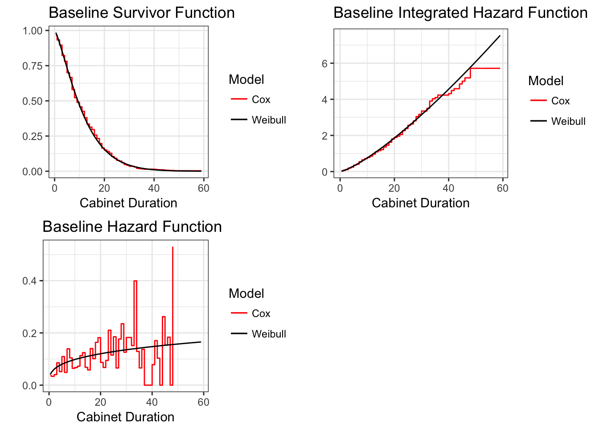

4 The Cox Proportional Hazards Model
This chapter makes use of the cabinet data used in the previous chapter.
4.1 Cabinet Data in R
4.1.1 Table 4.4
First, we run each of the models.
# Run Cox model with the Breslow approximation
b_mod <- coxph(dv ~ invest + polar + numst + format + postelec + caretakr,
data = cabinet, ties = "breslow")
# Run Cox model with the Efron approximation
ef_mod <- coxph(dv ~ invest + polar + numst + format + postelec + caretakr,
data = cabinet)
# Run Cox model with the Exact Discrete apprximation
ed_mod <- coxph(dv ~ invest + polar + numst + format + postelec + caretakr,
data = cabinet, ties = "exact")Here is the output, with the standard errors in parentheses:
| Breslow | Efron | Exact | ||
|---|---|---|---|---|
| Investiture | 0.38 (0.14) | 0.39 (0.14) | 0.41 (0.14) | |
| Polarization | 0.02 (0.01) | 0.02 (0.01) | 0.02 (0.01) | |
| Majority | -0.57 (0.13) | -0.58 (0.13) | -0.62 (0.14) | |
| Formation | 0.13 (0.04) | 0.13 (0.04) | 0.13 (0.05) | |
| Post-Election | -0.83 (0.14) | -0.86 (0.14) | -0.88 (0.15) | |
| Caretaker | 1.54 (0.28) | 1.71 (0.28) | 1.86 (0.33) | |
| Log Likelihood | -1299.89 | -1287.74 | -918.29 | |
| N | 314 | 314 | 314 | |
4.1.2 Table 4.5
Let’s compare the Cox Efron approximation with the Weibull proportional hazards.
To convert from the A.F.T. to Prop. Hazards parameterization, we will use the ConvertWeibull function from Chap. 3. We will prepare the data the same way we did in Chap. 3.
intercept <- rep(1, 314)
cabinet$intercept <- intercept
weib_mod1 <- survreg(dv ~ 0 + intercept + invest + polar + numst+ format + postelec
+ caretakr, data = cabinet)
weib_mod2 <- survreg(dv ~ 0 + invest + intercept + polar + numst+ format + postelec
+ caretakr, data = cabinet)
weib_mod1_ph <- ConvertWeibull(weib_mod1)
weib_mod2_ph <- ConvertWeibull(weib_mod2)
weib_ph <- rbind(weib_mod1_ph$vars, weib_mod2_ph$vars)
# Delete rows that are redundant/unnecessary
weib_ph <- weib_ph[-c(1,2,9,12,13,14,15,16),]
weib_ph <- weib_ph[c("intercept", "invest", "polar", "numst", "format", "postelec",
"caretakr", "gamma"),]
weib_ph## Estimate SE
## intercept -3.86270244 0.262780694
## invest 0.38274582 0.137174519
## polar 0.02321558 0.005585448
## numst -0.60149819 0.131047758
## format 0.13245769 0.043749027
## postelec -0.87931813 0.137687010
## caretakr 1.72601174 0.275890539
## gamma 1.29385218 0.064767331Let’s format this into a presentable table and compare it with the Cox Efron approximation.
| Cox | Weibull | ||
|---|---|---|---|
| Investiture | 0.39 (0.14) | 0.38 (0.14) | |
| Polarization | 0.02 (0.01) | 0.02 (0.01) | |
| Majority | -0.58 (0.13) | -0.60 (0.13) | |
| Formation | 0.13 (0.04) | 0.13 (0.04) | |
| Post-Election | -0.86 (0.14) | -0.88 (0.14) | |
| Caretaker | 1.71 (0.28) | 1.73 (0.28) | |
| Constant | -3.86 (0.26) | ||
| Log Likelihood | -1287.74 | -1014.62 | |
| N | 314 | 314 | |
| Shape Parameter | 1.29 | ||
4.1.3 Figure 4.1
In preparation for the plots, we mean center the polarization and formation attempts covariates.
cabinet$polarmean <- cabinet$polar - mean(cabinet$polar)
cabinet$formmean <- cabinet$format - mean(cabinet$format)We run Cox and Weibull models with these mean centered variables. We will use these models for out plots.
cox_mod_plot <- coxph(dv ~ invest + polarmean + numst + formmean + postelec + caretakr,
data = cabinet)
weib_mod_plot <- survreg(dv ~invest + polarmean + numst + formmean + postelec
+ caretakr, data = cabinet)We now calculate the baseline integrated hazard function, baseline survivor function, and baseline hazard function from the Cox model.
# Calculate baseline integrated hazard function H(t)
haz_rte <- basehaz(cox_mod_plot, centered = FALSE)
# Convert H(t) to the baseline hazard, h(t). h(t) = H(t) - H(t-1)
haz_cox <- data.frame(diff(haz_rte$hazard))
# Take out H(t) at t = 1 and merge with previous calculations
row <- data.frame(0.03594616)
colnames(row) <- "diff.haz_rte.hazard."
haz_cox <- rbind(row, haz_cox)
colnames(haz_cox) <- "baseline_hazard"
# Merge baseline hazards into master dataframe with integrated hazards
haz_rte$haz_cox <- haz_cox
# Calculate baseline survivor function
surv_basecox <- exp(-haz_rte$hazard)
# Merge baseline survivor values into master dataframe with integrated hazards
haz_rte$surv_basecox <- surv_basecox# A glimpse of the values for all three functions
head(haz_rte)## time hazard baseline_hazard surv_basecox
## 1 0.5 0.03594616 0.03594616 0.9646922
## 2 1.0 0.06974011 0.03379395 0.9326362
## 3 2.0 0.11021916 0.04047905 0.8956378
## 4 3.0 0.19579836 0.08557921 0.8221780
## 5 4.0 0.24758576 0.05178740 0.7806833
## 6 5.0 0.35689931 0.10931355 0.6998430We do the same for the Weibull model.
# Plot baseline survivor function for Weibull
# Let's create lambda from Weibull model
lambda_base <- unname(exp(-(weib_mod_plot$coef[1])))
# Because S(t) = exp(-(lambda*t))^p, we can generate the survivor function for the
# baseline case.
p <- 1/weib_mod_plot$scale
t <- cabinet$'_t'
surv_baseweib <- exp(-(lambda_base * t)^p)
weib <- data.frame(cbind(t, surv_baseweib))
# We can also generate the baseline hazard function, knowing that
# h(t) = lambda * p * (lambda * t)^(p-1)
haz_baseweib <- lambda_base * p * (lambda_base * t)^(p-1)
weib$haz_baseweib <- haz_baseweib
# The baseline integrated hazard is thus H(t) = -log(S(t))
inthaz_baseweib <- -log(surv_baseweib)
weib$inthaz_baseweib <- inthaz_baseweib
# A glimpse of the values for all three functions
head(weib)## t surv_baseweib haz_baseweib inthaz_baseweib
## 1 0.5 0.9843950 0.04069950 0.01572803
## 2 1.0 0.9621718 0.04989390 0.03856229
## 3 1.0 0.9621718 0.04989390 0.03856229
## 4 2.0 0.9097843 0.06116539 0.09454773
## 5 0.5 0.9843950 0.04069950 0.01572803
## 6 2.0 0.9097843 0.06116539 0.09454773Using the values from the haz_rte and weib dataframes, we can plot the values for the baseline survivor, integrated hazard, and baseline hazards for both models. Let’s start with the baseline survivor function.
base_surv <- ggplot(data = haz_rte, aes(x = time, y = surv_basecox, color = "black")) + geom_step() + geom_line(data = weib, aes(x = t, y = surv_baseweib, color = "red")) +
theme_bw() +
ggtitle("Baseline Survivor Function") +
xlab("Cabinet Duration") +
ylab("") +
labs(colour = "Model") +
scale_color_manual(labels = c("Cox", "Weibull"), values = c("red", "black"))Here is the integrated hazard function.
int_haz <- ggplot(data = haz_rte, aes(x = time, y = hazard, color = "black")) + geom_step() + geom_line(data = weib, aes(x = t, y = inthaz_baseweib, color = "red")) +
theme_bw() +
ggtitle("Baseline Integrated Hazard Function") +
xlab("Cabinet Duration") +
ylab("") +
labs(colour = "Model") +
scale_color_manual(labels = c("Cox", "Weibull"), values = c("red", "black"))Lastly, this is the baseline hazard.
#Drop last seven rows for graphical purposes
haz_rte <- haz_rte[-c(48:54),]
#Plot
base_haz <- ggplot(data = haz_rte, aes(x = time, y = haz_cox, color = "black")) + geom_step() + geom_line(data = weib, aes(x = t, y = haz_baseweib, color = "red")) +
theme_bw() +
ggtitle("Baseline Hazard Function") +
xlab("Cabinet Duration") +
ylab("") +
labs(colour = "Model") +
scale_color_manual(labels = c("Cox", "Weibull"), values = c("red", "black"))We can arrange all the plots together.
grid.arrange(base_surv, int_haz, base_haz, ncol = 2)
4.2 Cabinet Data in Stata
4.2.1 Table 4.4
We estimate the Cox model in four different ways, one for each method of ties.
eststo clear
* Breslow Method (Stata default)
eststo: stcox invest polar numst format postelec caretakr, nohr breslow
* Efron Method
eststo: stcox invest polar numst format postelec caretakr, nohr efron
* Averaged Likelihood
eststo: stcox invest polar numst format postelec caretakr, nohr exactm
* Exact Discrete
eststo: stcox invest polar numst format postelec caretakr, nohr exactpNow we can format the results into one table.
* Reset working directory to collect following output
cd ~/Dropbox/event_history/rmd
* Generate regression table output
esttab using ch4_cox.html, replace ///
coeflabel(invest "Investiture" polar "Polarization" numst "Majority" ///
format "Formation" postelec "Post-Election" caretakr "Caretaker" ///
_cons "Constant") ///
title(Cox Model of Cabinet Durations) ///
mtitles("Breslow" "Efron" "Avg. Lik." "Exact") ///
eqlabels("", none) ///
b(2) se(2) nostar ///
stats(ll N, label("Log-Likelihood" "<em>N</em>") fmt(2 0))
eststo clear4.2.2 Table 4.5
We want to compare the Cox model using the averaged likelihood approximation with the Weibull proportional hazards model.
*Averaged Likelihood*
eststo: stcox invest polar numst format postelec caretakr, nohr exactm
*Weibull*
eststo: streg invest polar numst format postelec caretakr, dist(weib) nohr Again, we can format the results into a table.
* Generate regression table output
esttab using ch4_cox_weib.html, replace ///
coeflabel(invest "Investiture" polar "Polarization" numst "Majority" ///
format "Formation" postelec "Post-Election" caretakr "Caretaker" ///
_cons "Constant") ///
title(Cox and Weibull Estimates of Cabinet Durations) ///
mtitles("Cox" "Weibull") ///
eqlabels("", none) ///
b(2) se(2) nostar ///
stats(ll N, label("Log-Likelihood" "<em>N</em>") fmt(2 0)) nogaps4.2.3 Figure 4.1
In preparation for the plots, we mean center the polarization and formation attempts covariates.
* To obtain a natural 0 point on the covariates, we mean center the polarization and formation attempts covariates. We do this using Stata's extension generator function:
egen meanpolar=mean(polar)
egen meanform=mean(format)
* Now we mean center these two variables:
gen polarmean=polar-meanpolar
gen formmean=format-meanformUsing the mean centered variables, we run the Cox and Weibull models that sill serve as the foundation for our plots. When we run the Cox model, we can immediately generate the baseline survivor, integrated hazard, and hazard functions.
* Estimate Cox model. The last three commands in the stcox statement produce the estimates of the baseline functions, which we can graph.
stcox invest polarmean numst formmean postelec caretakr, nohr exactm basech(inthaz) basehc(haz) basesurv(surv)
predict hr, hr
* which is exp(xb)
*To compute the survivor function for each observation we generate new variable:
gen surv_i=surv^hr
* Weibull model
streg invest polarmean numst formmean postelec caretakr, dist(weib) timeNow we can generate the baseline survivor, integrated hazard, and hazard functions from the Weibull model.
* Estimate the baseline survivor function from the Weibull
* First create lambda
gen lambda_base=exp(-(_b[_cons]))
*Second, note that S(t)=exp^-(lambda*t)^p. We can generate the survivor functions for the baseline case:
gen surv_baseweib=exp(-(lambda_base*durat)^e(aux_p))
* Now we generate the "baseline hazard" from the Weibull
* Note that h(t)=lambda*p*(lambda*t)^(p-1). We can generate the hazard rate for the "baseline case."
gen haz_baseweib=lambda_base*e(aux_p)*(lambda_base*durat)^(e(aux_p)-1)
*The baseline integrated hazard is thus H(t)=-log(S(t))
gen inthaz_baseweib=-log(surv_baseweib)We can graph each of the three functions from the Cox and Weibull Models
*Graph the baseline functions from the Cox and Weibull Models
twoway (line surv durat, sort connect(stairstep)) (line surv_baseweib durat, sort lpattern(solid)), ///
legend(off) ///
xtitle("Cabinet Duration") ///
title("Baseline Survivor Function", position(11)) ///
scheme(s2mono) graphregion(color(white) icolor(none)) ///
saving(cabcoxst.gph, replace)
* Graph the baseline integrated hazard from the Cox and Weibull Models
twoway (line inthaz durat, sort connect(stairstep)) (line inthaz_baseweib durat, sort lpattern(solid)), ///
legend(off) ///
xtitle("Cabinet Duration") ///
title("Baseline Integrated Hazard Function", position(11)) ///
scheme(s2mono) graphregion(color(white) icolor(none)) ///
saving(cabcoxinthaz.gph, replace)
*Graph the baseline hazard from the Cox and Weibull Models
twoway (line haz durat, sort connect(stairstep)) (line haz_baseweib durat, sort lpattern(solid)), ///
legend(off) ///
xtitle("Cabinet Duration") ///
title("Baseline Hazard Function", position(11)) ///
scheme(s2mono) graphregion(color(white) icolor(none)) ///
saving(cabcoxht.gph, replace)Now we can combine all three graphs and export to a .png file
graph combine cabcoxst.gph cabcoxinthaz.gph cabcoxht.gph, graphregion(color(white) ///
icolor(none)) saving(cabcoxbase.gph, replace)
graph export cabcoxbase.png, replace